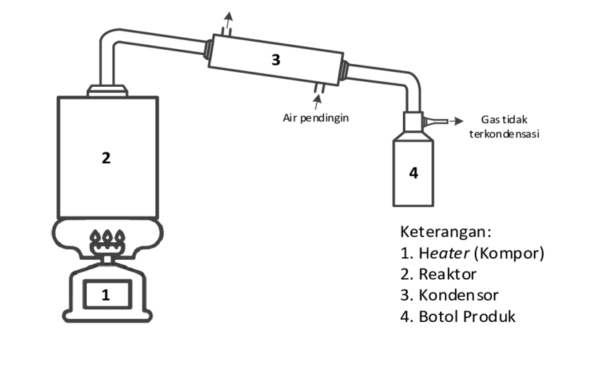

Hasilkan Minyak dari Limbah Plastik
Pirolisis adalah proses pemanasan bahan organik pada suhu tinggi tanpa atau dengan sedikit oksigen. Proses ini dapat mengubah sampah menjadi bahan bakar.
Pirolisis bekerja dengan memanaskan bahan organik tanpa oksigen untuk menguraikannya menjadi gas, cairan, dan residu padat (arang).